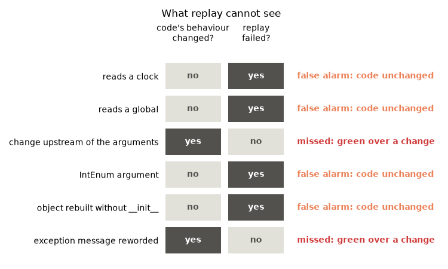

Note
Go to the end to download the full example code.
replay : gotchas, what a replay cannot see¶
The behavior that surprises people, run rather than described. Most of it follows from two rules: a call is replayed from its recorded inputs alone, and replay compares with what was recorded, not with what is right. The first section matters most: it is how a suite can be green without having tested anything.
Setup: where records go¶
The code under test reads its store from the REGRESSION_RECORDS_STORE environment
variable when it is imported, so the variable is set first
(record_func : recording a first call says why).
import os
import tempfile
from pathlib import Path
# In a project: REGRESSION_RECORDS_STORE=tests/regression_data in a .env file, loaded
# with python-dotenv's load_dotenv(). Here: a fresh temporary directory, empty each run.
STORE = Path(tempfile.mkdtemp(prefix="regression-records-"))
os.environ["REGRESSION_RECORDS_STORE"] = str(STORE)
print("store:", STORE)
store: /tmp/regression-records-cjws5z3z
Setup: the code under test¶
Replay imports a recorded function by module and name, so the code under test lives in
a module, gotchas, imported from regression_records._examples - support code
that ships with the package so that a page can import real code rather than define it
in a cell (record_func : recording a first call says more). In
your project, this is your own package. Each part is printed where the page first uses
it.
It holds one function per thing replay cannot see. The page changes its module-level
state - today, FX_RATES, load_prices, MESSAGE - to show what each
function’s replay depends on, and restores it afterwards. Account shows what a
method’s replay depends on beyond the state it records.
A few helpers: replay one function’s records, list one function’s records, and print
one line per replayed case. SEEN collects, for each gotcha below, whether the
behaviour really changed and whether replay flagged it, for the chart at the end.
import functools
import inspect
from collections import namedtuple
from datetime import date, timedelta
import numpy as np
from regression_records import (
RecordStore,
SerializationError,
ToleranceConfig,
compare,
enable,
record_func,
recording,
replay,
)
from regression_records._examples import gotchas
def replay_only(qualname, **replay_kwargs):
"""Replay the records of one function in ``gotchas``."""
return replay(STORE, select=f"{gotchas.__name__}:{qualname}", **replay_kwargs)
def records_of(recorded):
"""Return the records of one recorded function in ``gotchas``."""
return RecordStore(STORE).list_records(recorded.identity)
def show_cases(report):
"""Print one line per replayed record: its status and function."""
for case in report.cases:
print(f" {case.status.value:<14} {case.name}")
SEEN: dict[str, tuple[bool, bool]] = {} # gotcha -> (behaviour changed, replay failed)
Recording is off unless switched on; this page switches it on for the whole script.
enable()
A run without the switch records nothing¶
Recording is off unless REGRESSION_RECORDS switches it on. A run meant to record
that was started without it writes nothing, and says nothing about it.
with recording(False):
gotchas.average([1.0, 2.0])
assert not list(STORE.rglob("rec-*.json")), "nothing recorded"
An empty store passes¶
A store that exists but holds no records - never recorded, wiped, or git-ignored so CI checks out an empty directory - replays nothing, and passes. Check the number of cases where that matters. A path that does not exist at all is an error.
report = replay(STORE)
assert report.passed and len(report.cases) == 0, "an empty store replays nothing"
try:
replay(STORE / "no-such-store")
except FileNotFoundError as e:
print("FileNotFoundError:", e)
FileNotFoundError: no record store at /tmp/regression-records-cjws5z3z/no-such-store
A function that reads a clock¶
days_to_expiry reads today’s date. Replay calls it with the recorded expiry, but
the date it reads is the day of the replay, not the day of the recording.
print(inspect.getsource(gotchas.days_to_expiry))
recorded_days = gotchas.days_to_expiry(date(2030, 1, 1))
print("recorded:", recorded_days)
@record_func(STORE)
def days_to_expiry(expiry: date) -> int:
"""Return the whole days from today until ``expiry``."""
return (expiry - today()).days
recorded: 1162
Moving the clock on a day stands in for replaying tomorrow:
original_today = gotchas.today
gotchas.today = lambda: date.today() + timedelta(days=1)
try:
report = replay_only("days_to_expiry")
with recording(False):
tomorrow_days = gotchas.days_to_expiry(date(2030, 1, 1))
finally:
gotchas.today = original_today
print(report.failures[0].describe())
assert tomorrow_days == recorded_days - 1 and not report.passed
SEEN["reads a clock"] = (False, not report.passed)
differs: regression_records._examples.gotchas:days_to_expiry record 907af051 (regression_records/_examples/gotchas/days_to_expiry/records/rec-72ede14da698fac1-907af051.json)
comparison failed with 1 diff(s):
at '$.output' (value_mismatch): 1161 != expected 1162 (compared exactly: integers)
That is a limit of replay, not a regression: the code did not change, the day did. Pass the date in as an argument, and the record holds it.
A function that reads a global¶
to_usd reads rates loaded at start-up. The replaying process has whatever rates it
loaded, and if the one the record needs is missing, the call raises - reported as
raised, the status for a record that returned but raises on replay.
print(inspect.getsource(gotchas.to_usd))
print("recorded:", gotchas.to_usd(100.0, "GBP"))
saved_rates = dict(gotchas.FX_RATES)
gotchas.FX_RATES.pop("GBP") # a process that loaded only EUR
try:
report = replay_only("to_usd")
finally:
gotchas.FX_RATES.update(saved_rates)
show_cases(report)
print(report.failures[0].error)
assert report.counts()["raised"] == 1
SEEN["reads a global"] = (False, not report.passed)
@record_func(STORE)
def to_usd(amount: float, currency: str) -> float:
"""Return ``amount`` of ``currency`` in US dollars, at the loaded rate."""
return amount * FX_RATES[currency]
recorded: 125.0
raised regression_records._examples.gotchas:to_usd
raised on replay: KeyError: 'GBP'
Side effects happen again¶
Replay really calls the function. log_trade appends to a log file, so replaying it
appends again, as a unit test calling it would.
print(inspect.getsource(gotchas.log_trade))
gotchas.log_trade("T-1")
replay_only("log_trade")
print(gotchas.AUDIT_LOG.read_text())
assert gotchas.AUDIT_LOG.read_text().splitlines() == ["booked T-1", "booked T-1"]
@record_func(STORE)
def log_trade(trade_id: str) -> str:
"""Append ``trade_id`` to the audit log, and return the line written."""
line = f"booked {trade_id}"
with AUDIT_LOG.open("a") as log:
log.write(line + "\n")
return line
booked T-1
booked T-1
A change upstream of the arguments is invisible¶
average is recorded on what load_prices returned. Replay passes it those
recorded prices, so a broken load_prices does not reach average’s records.
Record at each stage of a pipeline you want pinned.
print(inspect.getsource(gotchas.load_prices))
print(inspect.getsource(gotchas.average))
recorded_average = gotchas.average(gotchas.load_prices())
original_load = gotchas.load_prices
gotchas.load_prices = lambda: [0.0, 0.0, 0.0] # broken
try:
report = replay_only("average")
with recording(False):
broken_average = gotchas.average(gotchas.load_prices())
finally:
gotchas.load_prices = original_load
show_cases(report)
assert report.passed and broken_average != recorded_average
SEEN["change upstream of the arguments"] = (True, not report.passed)
def load_prices() -> list[float]:
"""Return the day's prices; the undecorated step upstream of ``average``."""
return [101.0, 99.5, 100.25]
@record_func(STORE)
def average(prices: list[float]) -> float:
"""Return the mean of ``prices``."""
return sum(prices) / len(prices)
passed regression_records._examples.gotchas:average
No code drift either: drift tracks the recorded function’s own source, not the code
it depends on, and average did not change.
An argument that does not load back as itself¶
Replay calls the function with the recorded arguments loaded back from the record,
so an argument must round-trip exactly. Some types do not: an IntEnum member is
recorded as its integer (Limitations lists the others). label reads
side.name, so on replay it receives 1 and raises.
print(inspect.getsource(gotchas.label))
print("recorded:", gotchas.label(gotchas.Side.BUY))
report = replay_only("label")
show_cases(report)
print(report.failures[0].error)
assert report.counts()["raised"] == 1
SEEN["IntEnum argument"] = (False, not report.passed)
@record_func(STORE)
def label(side: Side) -> str:
"""Return the lower-case name of ``side``."""
return side.name.lower()
recorded: buy
raised regression_records._examples.gotchas:label
raised on replay: AttributeError: 'int' object has no attribute 'name'
A rebuilt object skips __init__¶
A method record holds the object’s state, and replay rebuilds the object from it
without calling __init__, as unpickling does. Anything __init__ does besides
setting attributes does not happen. Account.__init__ registers the account in a
module-level set, which close then removes it from:
print(inspect.getsource(gotchas.Account))
print("recorded:", gotchas.Account("A-1").close())
report = replay_only("Account.close")
show_cases(report)
print(report.failures[0].error)
assert report.counts()["raised"] == 1
SEEN["object rebuilt without __init__"] = (False, not report.passed)
class Account:
"""Registers itself in ``OPEN_ACCOUNTS`` when built: state kept outside itself."""
def __init__(self, name: str):
self.name = name
OPEN_ACCOUNTS.add(name)
@record_method(STORE)
def close(self) -> str:
"""Remove this account from ``OPEN_ACCOUNTS``, and return its name."""
OPEN_ACCOUNTS.remove(self.name)
return self.name
recorded: A-1
raised regression_records._examples.gotchas:Account.close
raised on replay: KeyError: 'A-1'
The rebuilt account was never registered, so close raises. Keep what a method
relies on in the object’s own attributes, or rebuild it with factory=
(record_method : recording and replaying methods).
Functions replay could not find¶
Replay imports a function by its recorded module and qualified name. A function that
has no such name is refused when it is decorated, rather than recorded into a store
that no replay can check. A lambda has no name, and a function defined inside
another has <locals> in its qualified name:
TypeError: record_func cannot record '<lambda>': a lambda, or a function or class defined inside a function, has no name replay can import it by. Define it at module level.
TypeError: record_func cannot record 'make_adder.<locals>.add': a lambda, or a function or class defined inside a function, has no name replay can import it by. Define it at module level.
A functools.partial has no qualified name at all. Decorate the function it wraps.
try:
record_func(STORE)(functools.partial(round, ndigits=2))
except TypeError as e:
print("TypeError:", e)
TypeError: record_func cannot record functools.partial(<built-in function round>, ndigits=2): it has no __qualname__ (a functools.partial, for one), so replay could not import it again. Decorate the underlying function.
A function defined in a script belongs to __main__. Replayed from the process
that ran the script it might even be found, which would make this easy to miss; from
any other process - pytest, CI - __main__ is something else, and it is not. So it
is refused too, and so is a method of a class defined in the script.
try:
@record_func(STORE)
def triple(x):
return 3 * x
except TypeError as e:
print("TypeError:", e)
TypeError: record_func cannot record 'triple': it is defined in the script being run (module __main__), which replay cannot import. Move it into an importable module and import it from the script.
Earlier versions recorded such functions without complaint. Their records may still
sit in a store, and they replay as not_importable.
A name that still imports but is no longer decorated is not_replayable: replay
only calls a function beneath a recording decorator. Taking the decorator off
average shows it.
decorated_average = gotchas.average
gotchas.average = gotchas.average.__wrapped__ # as if the decorator were removed
try:
report = replay_only("average")
finally:
gotchas.average = decorated_average
show_cases(report)
print(report.cases[0].error)
assert report.counts()["not_replayable"] == 1
not_replayable regression_records._examples.gotchas:average
'regression_records._examples.gotchas:average' is no longer a recorded function (it is not decorated with record_func)
Only the exception’s type is compared¶
A recorded exception is matched on its type. Messages routinely contain values, paths and addresses, so a changed message is not a regression.
print(inspect.getsource(gotchas.fail))
try:
gotchas.fail()
except ValueError as e:
print("recorded:", e)
gotchas.MESSAGE = "completely different wording"
try:
report = replay_only("fail")
finally:
gotchas.MESSAGE = "first wording"
show_cases(report)
assert report.passed
SEEN["exception message reworded"] = (True, not report.passed)
@record_func(STORE)
def fail() -> None:
"""Raise a ``ValueError`` whose message is ``MESSAGE``."""
raise ValueError(MESSAGE)
recorded: first wording
passed regression_records._examples.gotchas:fail
Integers are compared exactly¶
Counts and identifiers are not measurements, so no tolerance applies to them - not even a generous one. Tolerance applies once a float is involved: a count that is now computed as a float is compared within it.
loose = ToleranceConfig(rtol=1e-3)
assert not compare(1_000_000_000, 1_000_000_050, loose).passed, "ints are exact"
assert compare(1_000_000_000, 1_000_000_050.0, loose).passed, "a float is not"
NaN, null and signed zero¶
NaN equals NaN by default (equal_nan=True), because a recorded NaN usually
means “no value here” and should keep meaning it. Signed zeros compare equal as
results but hash differently as arguments, so recording both gives two records.
assert compare(float("nan"), float("nan")).passed, "NaN result vs NaN"
assert compare(0.0, -0.0).passed, "0.0 result vs -0.0"
print(inspect.getsource(gotchas.echo))
gotchas.echo(0.0)
gotchas.echo(-0.0)
assert len(records_of(gotchas.echo)) == 2, "0.0 and -0.0 are two records"
@record_func(STORE)
def echo(value: object) -> object:
"""Return ``value`` unchanged."""
return value
A polars null is not a NaN, though: one is a missing value and the other a number,
and a column that changed from one to the other is reported whatever equal_nan
says. pandas has a single missing value per dtype, so the question does not arise.
try:
import polars as pl
nulls = pl.DataFrame({"x": [1.0, None]})
nans = pl.DataFrame({"x": [1.0, float("nan")]})
assert not compare(nulls, nans).passed, "a polars null is not a NaN"
except ImportError:
print("polars is not installed")
A frame argument is hashed by its bytes¶
A call’s input hash covers its serialized arguments, and for a dataframe that includes the name of its parquet file - the hash of the file’s bytes. Equal frames give equal bytes from run to run, but the bytes are the encoder’s to choose: polars changed them between 1.30 and 1.40, for one. After such an upgrade, re-recording a call that takes a frame adds a record beside the old one, rather than converging with it. Both still replay, since nothing is looked up by input hash; delete whichever you no longer want.
try:
import io
import polars as pl
from regression_records.serialization.naming import content_filename
buffer = io.BytesIO()
pl.DataFrame({"a": [1, 2, 3]}).write_parquet(buffer)
print(
f"polars {pl.__version__}:",
content_filename("df", buffer.getvalue(), extension="parquet"),
)
except ImportError:
print("polars is not installed")
polars 1.44.2: df-5a896514ed865c282865ab3650e6fb9e.parquet
A call is recorded once per process¶
Within one process a call is recorded once, keyed on its arguments, not its result. A function that returns something different the second time it is called with the same arguments has only its first result recorded. Re-record in a fresh process (RecordStore, replay : re-recording after an intended change).
print(inspect.getsource(gotchas.tick))
returned = [gotchas.tick(1), gotchas.tick(1), gotchas.tick(1)]
print("returned:", returned)
assert returned == [1, 2, 3] and len(records_of(gotchas.tick)) == 1
@record_func(STORE)
def tick(step: int) -> int:
"""Add ``step`` to a module-level count, and return the new count."""
CALLS["count"] += step
return CALLS["count"]
returned: [1, 2, 3]
What cannot be recorded¶
Each of these is refused when recording, with an error that says what to do - rather than writing a record that silently lost something or could never be read back.
Local = namedtuple("Local", "bid ask") # defined in __main__: cannot be re-imported
parent = {"name": "parent", "children": []}
parent["children"].append({"name": "child", "parent": parent}) # refers back to itself
unrecordable = {
"a masked array": np.ma.masked_array([1.0, 2.0], mask=[False, True]),
"a self-referencing structure": parent,
"a class from __main__": Local(1.0, 1.1),
"an object array": np.array([1, "two"], dtype=object),
}
refused = 0
for description, value in unrecordable.items():
try:
gotchas.echo(value)
except SerializationError as e:
refused += 1
print(f"{description}:\n {str(e)[:96]}...")
assert refused == len(unrecordable)
a masked array:
cannot record a numpy.ma.MaskedArray: only what a plain ndarray holds would be saved, silently d...
a self-referencing structure:
cannot record a 'dict' that contains a reference back to itself (a parent/child link, for instan...
a class from __main__:
cannot serialize instances of class 'Local' defined in '__main__' - it cannot be re-imported by ...
an object array:
numpy arrays with dtype=object are not supported (not portable and requires unpickling to load);...
The same types from an importable module are fine - a named tuple keeps its class, and comes back as itself:
print(inspect.getsource(gotchas.quote_and_point))
gotchas.quote_and_point()
report = replay_only("quote_and_point")
show_cases(report)
assert report.passed
@record_func(STORE)
def quote_and_point() -> tuple[Quote, Point]:
"""Return a named tuple and an object, both from an importable module."""
return Quote(bid=99.5, ask=100.5), Point(1.0, 2.0)
passed regression_records._examples.gotchas:quote_and_point
Generator and async functions are refused earlier still, when decorated: calling one returns a generator or coroutine, which is not a result.
try:
@record_func(STORE)
def stream():
yield 1
except TypeError as e:
print("TypeError:", str(e)[:82], "...")
TypeError: record_func cannot record 'stream': calling a generator or async function returns ...
state_attrs selects attributes, not properties¶
A name that matches nothing - a typo, or a property, which lives on the class rather than in the instance - is an error, because the method would otherwise be recorded with an empty state.
print(inspect.getsource(gotchas.Basket))
try:
gotchas.Basket().add("apple")
except SerializationError as e:
print("SerializationError:", str(e)[:88], "...")
class Basket:
"""Has a ``size`` property, which ``state_attrs`` cannot select."""
def __init__(self):
self.items: list[str] = []
@property
def size(self) -> int:
"""Return the number of items."""
return len(self.items)
@record_method(STORE, state_attrs=["size"], factory=lambda: Basket())
def add(self, item: str) -> None:
"""Put ``item`` in the basket."""
self.items.append(item)
SerializationError: state_attrs names ['size'], which the instance had neither before nor after the call. st ...
What changed, and what replay said¶
Every gotcha above in one picture. Where the two columns agree, replay told the truth. Where they disagree it did not: a green run over a change it cannot see, or a red one over code that never changed.
import matplotlib.pyplot as plt
names = list(SEEN)
fig, ax = plt.subplots(figsize=(7.5, 0.55 * len(names) + 1.2))
for row, name in enumerate(names):
changed, failed = SEEN[name]
y = -row
for col, value in enumerate((changed, failed)):
ax.add_patch(
plt.Rectangle(
(col + 0.06, y - 0.4),
0.88,
0.8,
lw=0,
color="#52514e" if value else "#e1e0d9",
)
)
ax.text(
col + 0.5,
y,
"yes" if value else "no",
ha="center",
va="center",
color="white" if value else "#52514e",
fontweight="bold",
)
if changed == failed:
verdict, color = "replay told the truth", "#0ca30c"
elif changed:
verdict, color = "missed: green over a change", "#d03b3b"
else:
verdict, color = "false alarm: code unchanged", "#ec835a"
ax.text(2.15, y, verdict, va="center", color=color, fontweight="bold")
ax.set_xlim(0, 4.4)
ax.set_ylim(-len(names) + 0.4, 0.9)
ax.set_xticks([0.5, 1.5], ["code's behaviour\nchanged?", "replay\nfailed?"])
ax.xaxis.tick_top()
ax.set_yticks([-r for r in range(len(names))], names)
ax.tick_params(length=0)
ax.grid(False)
for side in ax.spines.values():
side.set_visible(False)
ax.set_title("What replay cannot see", loc="left", pad=36)
fig.tight_layout()
assert SEEN["change upstream of the arguments"] == (True, False)
assert SEEN["exception message reworded"] == (True, False)

The exception message is a deliberate blind spot; the change upstream is the one to design around, by recording each stage you want pinned. The false alarms all come from the same rule - a call is replayed from its recorded inputs alone - and each section above says how to give replay what it needs.
Things this page cannot show¶
Parallel recording. Writes are atomic, and several processes may record to one store at once, as under
pytest -n auto: identical recordings converge on one file, and changed ones add records. Do not runRecordStore.prunewhile anything is recording.Trust. Loading a record imports the module a recorded object names. Review changes to a store as you review the code beside it, and see the Trust section of Persistence.
Pickle is opt-in. A pandas frame that parquet cannot hold is refused unless you ask for it to be pickled - replay, compare : polars and pandas frames as arguments and results shows how - and a pickle is never read without the same opt-in.
Drift warnings. Under
replay_tests, a case that passes although its function’s source changed since recording warns withCodeDriftWarning(replay : exceptions and code drift in the report). Changing only its decorator’s arguments, its comments or its layout does not.
That is the end of the gallery. Limitations lists everything replay does not do, and Replay describes the report in full.
Total running time of the script: (0 minutes 0.160 seconds)